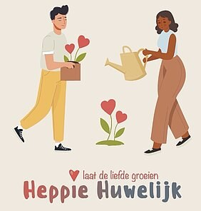
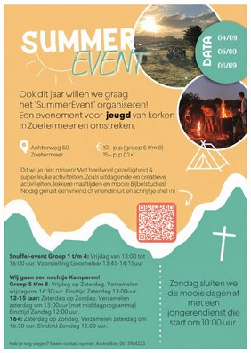
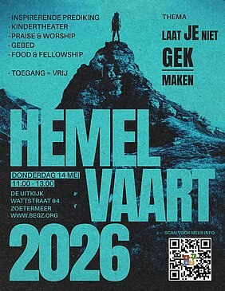
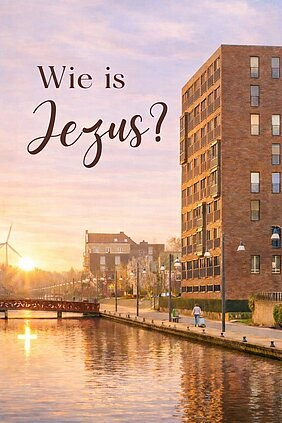
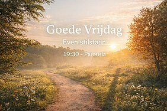

Actueel
Nieuws uit de gemeente, de livestream en de kerkapp.

Huwelijksconferentie
Zijn jullie getrouwd of hebben jullie plannen om te trouwen?

Summer Event
Dit wil je niet missen! Op 4, 5 en 6 september vindt er weer een Summer-Event plaats voor jeugd uit kerken van Zoetermeer en omstreken!

Hemelvaartsdienst
Donderdag 14 mei 2026 vieren we Hemelvaart! Deze ochtend hebben we een speciale dienst.

Feest van de Geest
Rond Hemelvaart en Pinksteren openen tien Zoetermeerse kerken (waaronder Parousia Zoetermeer) hun deuren om beeldende kunst te exposeren...

Paasviering
Op zondag 5 april vieren wij Pasen met elkaar. Maar wat vieren we dan eigenlijk?

Goede Vrijdag
Goede Vrijdag is geen feestdag.
Verklaring
De raad van de Evangelische Gemeente CAMA Parousia Zoetermeer en de voorganger de heer Jurgen Lindenhols hebben na overleg gezamenlijk...

Kerstgezinsdienst
Op kerstochtend is er een gezinsdienst waarbij we een heel leuk programma hebben voor het hele gezin.
Kerstavonddienst
Op kerstavond 24 december hebben we om 21:00 uur een traditionele kerstavonddienst.